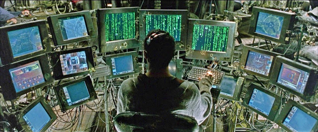
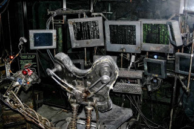

This Thoughtbot post describes how to make Vim and Tmux work together in Harmony based on this crhistoomey plugin, allowing you to traverse both your Vim and Tmux windows and panes respectively.
Having the ability to traverse Vim and Tmux splits without having to think about it using ctrl-h, ctrl-j, ctrl-k, ctrl-l is fantastic! But I still had an annoyance source from the window manager (Ratpoison) and the multi monitor setup.
So I took the same concept and extend it to those uses cases, so now I use ctrl-h, ctrl-j, ctrl-k, ctrl-l to move through my Window Manager splits, my Tmux panes, my Vim windows and my Monitors with minimum mental overhead. Here is how.
Some of the scripts are a bit of complex, so instead of explaining them in detail the general algorithm is described.
Frame-Monitor Navigation
When traversing frames (Ratpoison splits) it stops at the end of the current monitor, so first I needed to change to the left or right monitor when a movement command is triggered at the edge of the current one.
The script frame-mon_navigator.sh calculates if the current frame is the rightmost or the leftmost in the current monitor, if it is, it goes to the next of previous monitor depending on the movement command.
#!/bin/sh
ratpoison -c 'fdump'| sed 's/,/\n/g' | awk '{print $5" "$19}' > /tmp/ratpoison_frame_monitor_navigator
# Calculate X coordinate for rightmost frame
greater_x_coordinate=0
while read frame; do
coordinate=$(echo "$frame" | cut -d' ' -f1)
if [[ $coordinate -gt $greater_x_coordinate ]];
then
greater_x_coordinate=$coordinate
fi
done < /tmp/ratpoison_frame_monitor_navigator
# Calculate current frame X coordinate
x_coordinate=$(head -n1 /tmp/ratpoison_frame_monitor_navigator | cut -d' ' -f1)
last_access=$(head -n1 /tmp/ratpoison_frame_monitor_navigator | cut -d' ' -f2)
while read frame; do
access=$(echo "$frame" | cut -d' ' -f2)
if [[ $access -gt $last_access ]];
then
last_access=$access
x_coordinate=$(echo "$frame" | cut -d' ' -f1)
fi
done < /tmp/ratpoison_frame_monitor_navigator
function is_leftmost
{
if [[ $x_coordinate -eq 0 ]]; then
return 0
else
return 1
fi
}
function is_rightmost
{
if [[ $x_coordinate -eq $greater_x_coordinate ]]; then
return 0
else
return 1
fi
}
# Go to previous screen if currently if leftmost frame
# Go to next screen if currently if rightmost frame
# Execute frame focus otherwise
if [[ "$1" == "left" ]]; then
if is_leftmost; then
ratpoison -c 'prevscreen'
else
ratpoison -c 'focusleft'
fi
elif [[ "$1" == "right" ]]; then
if is_rightmost; then
ratpoison -c 'nextscreen'
else
ratpoison -c 'focusright'
fi
fiRatpoison-Tmux Navigator

We need a way to pass movement commands to Tmux so Vim-Tmux navigation works as always, but we also need to pass movement commands from Tmux to Ratpoison when a movement command is triggered from Tmux edge pane.
The script rat_tmux-navigator.sh is able to tell if the terminal emulator (Urxvt) is currently focused and, if so, send the movement commands to Tmux so it can handle panes traversing as usual. It also define functions that Tmux can use to know if a edge pane is reached and send the movement commands to Ratpoison through the frame-mon_navigator.sh script so Frame-Monitor navigation is included in the process.
#!/bin/bash
if [[ "$1" == "rat" ]]; then
current_window=$(ratpoison -c 'info' | sed 's/(.*).*(\(.*\))/\1/'\
| tr '[:upper:]' '[:lower:]')
elif [[ "$1" == "tmux" ]];then
window_bottom=$(tmux list-panes -F "#{window_height}" | head -n1)
window_right=$(tmux list-panes -F "#{window_width}" | head -n1)
window_bottom=$(($window_bottom - 1))
window_right=$(($window_right - 1))
pane=$(tmux list-panes -F "#{pane_left} #{pane_right} #{pane_top} #{pane_bottom} #{pane_active}" | grep '.* 1$')
pane_left=$(echo "$pane" | cut -d' ' -f 1)
pane_right=$(echo "$pane" | cut -d' ' -f 2)
pane_top=$(echo "$pane" | cut -d' ' -f 3)
pane_bottom=$(echo "$pane" | cut -d' ' -f 4)
fi
function rat_up
{
if [[ "$current_window" == "urxvt" ]];
then
ratpoison -c 'meta C-k'
else
ratpoison -c 'focusup'
fi
}
function rat_down
{
if [[ "$current_window" == "urxvt" ]];
then
ratpoison -c 'meta C-j'
else
ratpoison -c 'focusdown'
fi
}
function rat_right
{
if [[ "$current_window" == "urxvt" ]];
then
ratpoison -c 'meta C-l'
else
~/.scripts/ratpoison/frame-mon_navigator.sh right
fi
}
function rat_left
{
if [[ "$current_window" == "urxvt" ]];
then
ratpoison -c 'meta C-h'
else
~/.scripts/ratpoison/frame-mon_navigator.sh left
fi
}
function tmux_up
{
if [[ $pane_top -eq 0 ]];
then
ratpoison -c 'focusup'
else
tmux select-pane -U
fi
}
function tmux_down
{
if [[ $pane_bottom -eq $window_bottom ]];
then
ratpoison -c 'focusdown'
else
tmux select-pane -D
fi
}
function tmux_right
{
if [[ $pane_right -eq $window_right ]];
then
~/.scripts/ratpoison/frame-mon_navigator.sh right
else
tmux select-pane -R
fi
}
function tmux_left
{
if [[ $pane_left -eq 0 ]];
then
~/.scripts/ratpoison/frame-mon_navigator.sh left
else
tmux select-pane -L
fi
}
if [[ "$1" == "rat" ]];then
case "$2" in
'up')
rat_up
;;
'down')
rat_down
;;
'right')
rat_right
;;
'left')
rat_left
;;
esac
elif [[ "$1" == "tmux" ]];then
case "$2" in
'up')
tmux_up
;;
'down')
tmux_down
;;
'right')
tmux_right
;;
'left')
tmux_left
;;
esac
fiVim-Tmux Navigator
Modifying Tmux mappings to use above scripts will make it work for Tmux-Ratpoison traversing but when a Vim instance is on an Tmux edge pane it will not jump to the appropriate Ratpoison split. To solve it I forked the vim-tmux-navigator project and made the right changes to it in the vim-tmux-wm-monitor branch
Then using vim-plug I install it in my .vimrc with:
Plug 'alx741/vim-tmux-navigator', { 'branch': 'vim-tmux-wm-monitor' }Mappings
Putting all together requires the appropriate mappings for Ratpoison and Tmux. Vim is already configured with the forked plugin.
Ratpoison
These lines on .ratpoisonrc will do the top level handling. Take into account the path to the rat_tmux-navigator.sh script.
definekey top C-k exec ~/.scripts/ratpoison/rat_tmux-navigator.sh rat up
definekey top C-j exec ~/.scripts/ratpoison/rat_tmux-navigator.sh rat down
definekey top C-l exec ~/.scripts/ratpoison/rat_tmux-navigator.sh rat right
definekey top C-h exec ~/.scripts/ratpoison/rat_tmux-navigator.sh rat leftTmux
Finally these lines on .tmux.conf are basically modified versions of the vim-tmux-navigator plugin ones.
is_vim="ps -o state= -o comm= -t '#{pane_tty}' \
| grep -iqE '^[^TXZ ]+ +(\\S+\\/)?g?(view|n?vim?x?)(diff)?$'"
bind-key C-h if-shell "$is_vim" "send-keys C-h" "run '~/.scripts/ratpoison/rat_tmux-navigator.sh tmux left'"
bind-key C-j if-shell "$is_vim" "send-keys C-j" "run '~/.scripts/ratpoison/rat_tmux-navigator.sh tmux down'"
bind-key C-k if-shell "$is_vim" "send-keys C-k" "run '~/.scripts/ratpoison/rat_tmux-navigator.sh tmux up'"
bind-key C-l if-shell "$is_vim" "send-keys C-l" "run '~/.scripts/ratpoison/rat_tmux-navigator.sh tmux right'"
bind-key -n C-h if-shell "$is_vim" "send-keys C-h" "run '~/.scripts/ratpoison/rat_tmux-navigator.sh tmux left'"
bind-key -n C-j if-shell "$is_vim" "send-keys C-j" "run '~/.scripts/ratpoison/rat_tmux-navigator.sh tmux down'"
bind-key -n C-k if-shell "$is_vim" "send-keys C-k" "run '~/.scripts/ratpoison/rat_tmux-navigator.sh tmux up'"
bind-key -n C-l if-shell "$is_vim" "send-keys C-l" "run '~/.scripts/ratpoison/rat_tmux-navigator.sh tmux right'"
bind-key h if-shell "$is_vim" "send-keys C-h" "run '~/.scripts/ratpoison/rat_tmux-navigator.sh tmux left'"
bind-key j if-shell "$is_vim" "send-keys C-j" "run '~/.scripts/ratpoison/rat_tmux-navigator.sh tmux down'"
bind-key k if-shell "$is_vim" "send-keys C-k" "run '~/.scripts/ratpoison/rat_tmux-navigator.sh tmux up'"
bind-key l if-shell "$is_vim" "send-keys C-l" "run '~/.scripts/ratpoison/rat_tmux-navigator.sh tmux right'"